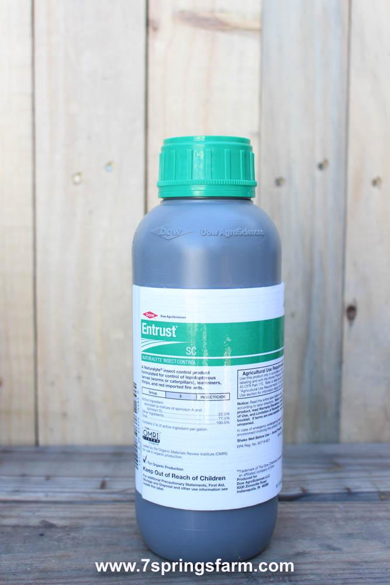

| 多杀菌素 Entrust SC （Group 5 insecticide，内吸性） |
| 产品图片 |

|
| 基本介绍 |
- 多杀菌素是一种由土壤细菌制成的天然物质，对昆虫有毒。它是两种化学物质的混合物，称为多杀菌素 A 和多杀菌素 D。它用于控制多种害虫，包括蓟马、潜叶虫、红蜘蛛、蚊子、蚂蚁、果蝇等。
- 杀虫方式：触杀加胃杀。多杀菌素会影响昆虫的神经系统。导致虫子肌肉不受控制地弯曲，导致瘫痪并最终死亡，通常在 1-2 天内。
- 多杀菌素对人和其他哺乳动物的毒性很低。但是，如果它接触到您的皮肤或眼睛，它会引起刺激和发红。
- 多杀菌素被阳光迅速分解。在阳光照射下， 药品的半衰期为 2 至 16 天，在水中不到 1 小时（半衰期：一半产品降解所需时间）。当应用于叶子时，一些多杀菌素可以被吸收。然而，它不容易从叶子传播到植物的其余部分。在没有阳光的情况下，多杀菌素分解非常缓慢，半衰期超过 30 天至 259 天。
- 对蜜蜂在处理后 3 小时内有毒。请勿将此杀虫剂用于开花、花粉脱落或如果蜜蜂可能在此期间在植物上觅食，则为植物的产花蜜部分时间段。
- 对水生无脊椎动物有毒。请勿应用直接接触水、存在地表水的地区，处理冲洗打药设备时请勿污染水源。不适用于可能发生径流的地方。
- 不按照标签规定使用这个农药是违反联邦法律⚠️
- 施药后4个小时以内不要进去地里面，如果进地需要穿戴：工作服、防水材料制成的耐化学腐蚀手套、鞋子加袜子；等喷洒的药物干燥以后可以进地。
- 对益虫影响不大；
|
用药间隔：
至少4天 |
下菜时间：
打药后第二天即可下菜 |
使用最佳时间：
最佳使用时期在昆虫发现的早期阶段使用好。
注意⚠️：卖家Gregory说雨天不是不能打，就是下完雨就要再重新打，如果是晴天药效就能持续一周以上；
|
| 配药方法 |
- 配药——先把打药设备中加入1/2的水，再加入ENTRUST SC，再倒入剩余的水，混合均匀。
- PH——6.0-9.0之间，如果加入ENTRUST SC之前PH不在这个范围内，需要先调整PH值，再加入Entrust.
- 打潜叶蝇、蓟马的时候，可以加入乳化作物油或甲基化作物油及有机硅组合产品提高entrust药效。
- 喷头——hollow cone, twin jet flat fan nozzles
|
| 注意事项 |
- 保护措施： 长袖衬衫和长裤、鞋子加袜子；
- spinetoram和 spinosad都属于Group 5的杀虫剂，因此Entrust不能跟含有Spinetoram活性成分的农药轮流使用，那样会产生抗药性。需要跟不在Group 5的杀虫剂使用，不管是Entrust还是Group 5的其他杀菌剂不能连续使用超过2次以上。
- 避免产生抗药性，同一代的昆虫上使用Entrust，下一代的昆虫上使用另外一种活性成分的杀虫剂。
- 每次使用之前摇一下再配制药，以防冻结；
|
| 存储、处理空瓶子 |
- 存储——必须在原包装瓶中存放；
- 使用本产品产生的废物必须在现场或经批准的废物处理设施进行处理。
- 将剩余的液体清空到打药设备或配药罐中，将容器装满 1/4 水并盖上盖子。摇10 秒。将冲洗液倒入打药设备或配药罐以备后用。再重复此过程两次。然后回收（如果有），或刺破并在卫生垃圾填埋场处理，或通过焚烧，或通过州和地方允许的其他程序当局。
|
| 虫害以及打药比例⚠️：没有例举所有的害虫，仅是最常见的害虫； |
| 【十字花科】 |
卷心菜、西兰花、菜花、羽衣甘蓝、大白菜，小白菜，奶白菜，上海青，菜心，萝卜等。 |
- 用药浓度：
- 跳蚤甲虫：4-8oz兑50加仑水/英亩（2.4-4.7ml兑1加仑水）
- 潜叶蝇：4-10oz兑50加仑水/英亩（2.4-6ml兑1加仑水）
- 蓟马：4-10oz兑50加仑水/英亩（2.4-6ml兑1加仑水）
- ⚠️一般用最低浓度！
|
| 【茄科果菜类】 |
茄子、辣椒、西红柿 |
- 害虫：
- 跳蚤甲虫：4-8oz兑50加仑水/英亩 （2.4ml-4.7ml兑1加仑水）
- 潜叶蝇：4-8oz兑50加仑水/英亩 （2.4ml-4.7ml兑1加仑水）
- 蓟马：4-10oz兑50加仑水/英亩（3.5ml-6ml兑1加仑水）
- ⚠️一般用最低浓度！
|
| 【球茎类】 |
洋葱、大蒜等 |
- 用药浓度：
- 跳骚甲虫：3-6oz 兑50加仑水/英亩 （1.8ml-3.6ml 兑1加仑水）
- 蓟马：4-8 oz 兑50加仑水/英亩 （2.4ml-4.7ml兑1加仑水）
- ⚠️一般用最低浓度！
|
| 【叶菜】 |
芹菜、菠菜、生菜、甜菜叶 |
- 用药浓度：
- 潜叶蝇：6-10oz兑50加仑水打1英亩（3.5-6ml/加仑水）；
- 蓟马：6-10oz兑50加仑水打1英亩（3.5-6ml/加仑水）；
- 一般用最低浓度！高浓度使用背景：必须在害虫比较严重的情况下，或者害虫生长发育阶段晚期的时候才使用高浓度；
- 用来治蓟马时，如果连续使用了2次的group 5的杀虫剂，可以换成其他的不是group 5的杀虫剂。
|
| 打药限制 |
- 1种作物1年的1英亩的Entrust的使用量不要超过29oz；
- 1年之内Entrust的使用次数不能超过6次；
- 大棚里面以上叶菜类的不要用Entrust
|